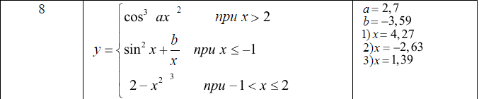

Ветвления
Задание 1. Даны два целых числа: A, B. Проверить истинность высказывания: «Каждое из чисел A и B нечетное».
Результат:
Задание 2. Даны два числа. Вывести вначале большее, а затем меньшее из них.
Результат:
Задание 3. Вычислить значение функции y=f(x) при произвольных значениях x.
Результат:
Задание 4. Вычислить значение функции y=f(x) при произвольных значениях x.
Для вычисления значения функции использовать оператор switch.
Результат: